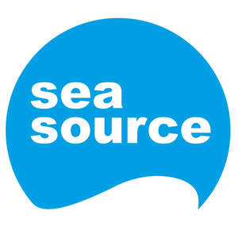
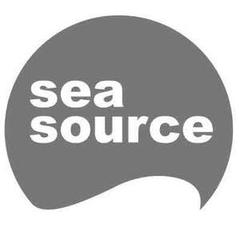

Trade Mark Journal No.2025/040 3 October 2025
UK00004268132 23 September 2025 (9,41,42,45)
Mark 1

Mark 2

- Class 9
- Scientific, nautical, surveying, signalling, checking (supervision), and teaching apparatus and instruments; data processing equipment; computers, computer hardware and computer peripheral devices; computer software; computer application software; application software for mobile devices; downloadable software applications for use in marine operations, crew management, vessel compliance, and offshore asset protection; software for managing crew certifications, qualifications, training records, boarding events, and compliance documentation; software for vessel record-keeping, operational reporting, and asset monitoring; software for processing and visualizing AIS (Automatic Identification System) data; software for issuing alerts and notifications regarding expiry dates of certifications and licences; software for secure transmission of crew data to third parties; downloadable mobile applications for use in the maritime and offshore energy sectors; electronic publications and and instructional materials; electronic publications and instructional materials in the field of marine operations and fisheries.
- Class 41
- Education and training services; arranging and conducting conferences, workshops, seminars, symposia, competitions, conventions and meetings; provision of training and education services in the fields of marine certification, safety, compliance, and vessel operations; online training modules and certification tracking for maritime personnel; educational services relating to offshore energy operations and marine logistics; publication of training materials and operational manuals; writing, reporting and publication of non-downloadable guidelines, reports, data and case studies; advisory and consultancy services relating to all of the abovementioned services.
- Class 42
- Design and development of computer hardware and software; providing temporary use of non-downloadable software applications accessible via a web site; Software as a Service (SaaS); Platform as a Service (PaaS); design and development of software and platforms for marine crew management, vessel compliance, operational reporting, and offshore asset protection; software as a service (SaaS) for use in the fields of marine operations, crew logistics, energy infrastructure, regulatory compliance and asset monitoring; development of mobile and web-based applications for use in the maritime and offshore energy sectors; hosting of software platforms for use in crew certification and compliance management; technical consultancy relating to software for marine logistics and compliance, marine personnel administration and digital credentialing; integration of third-party data sources into crew management platforms; provision of temporary use of non-downloadable software for managing crew records and transmitting compliance data; integration of AIS data into digital platforms for real-time monitoring and reporting.
- Class 45
- Monitoring and surveillance services for the protection of offshore assets and marine installations; security services based on AIS data and other marine tracking systems; verification and validation of crew certifications and vessel compliance documentation; consultancy relating to regulatory compliance and risk mitigation in offshore operations; incident reporting and response coordination services for marine and offshore environments.
Sea Source Off-Shore Ltd
Representative: HGF Limited